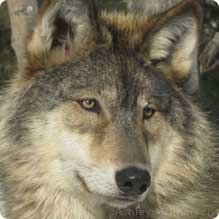

Gray Wolf - Canis lupus
Native to the wilderness and remote areas of Eurasia and North America
It feeds primarily on large ungulates, though it also eats smaller animals, livestock, carrion, and garbage.
Deliberate human persecution has reduced the species' range to about one third.